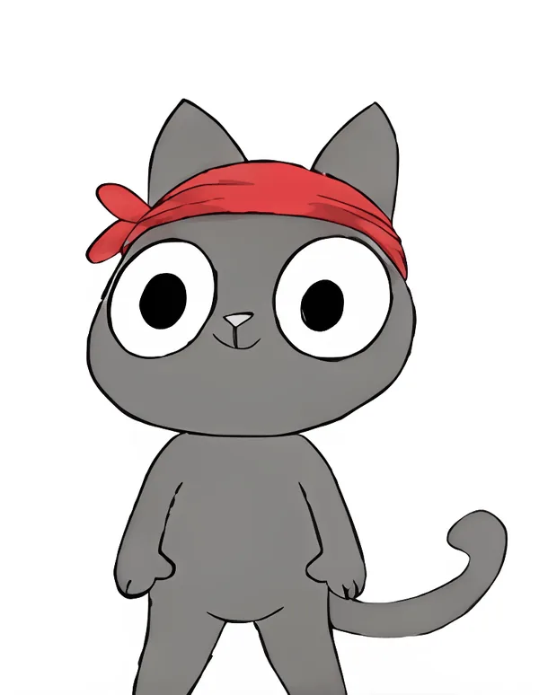
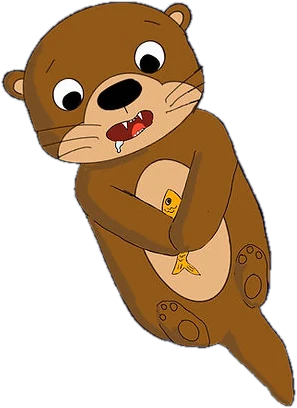

Chapter One · About
Drawing the details that make stories feel like home.
I am Bethany, an illustrator inspired by nature, cute animals and the stories that stay with us.

My practice
Curious by nature.
I have loved books for as long as I can remember. I grew up drawing characters from my favourite stories, then studied illustration at the University of Plymouth.
Today I make warm, observant images for children's books and marketing. I care about the tiny choices that help a child recognise themselves in a story and want to turn the next page.

From the sketchbook
The Cat
A grey cat in a red bandana, drawn as a test in motion: does the personality still come through when the character starts to move?
- Format
- Frame-by-frame animation
- Focus
- Timing, expression, appeal
The approach
Kind, clear and full of character.
Good children's marketing begins with a world children want to enter. I build visual identities that make a story easy to recognise, emotionally inviting and memorable for the grown-ups choosing it too.
My work is rooted in observation, nature and the small details that make a character feel real.
